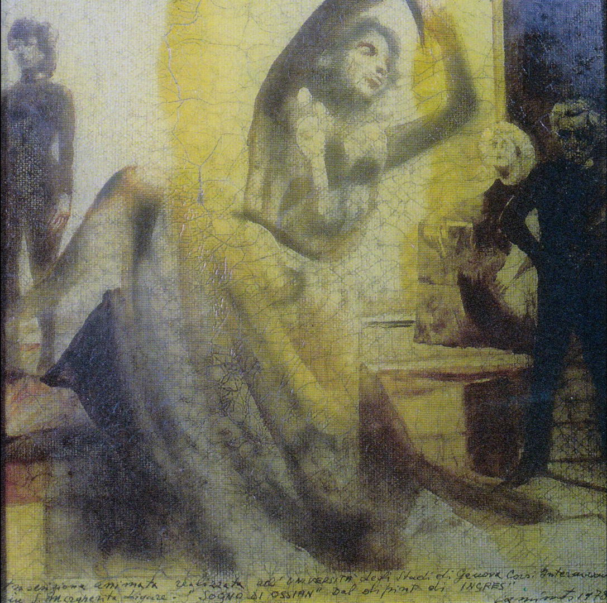
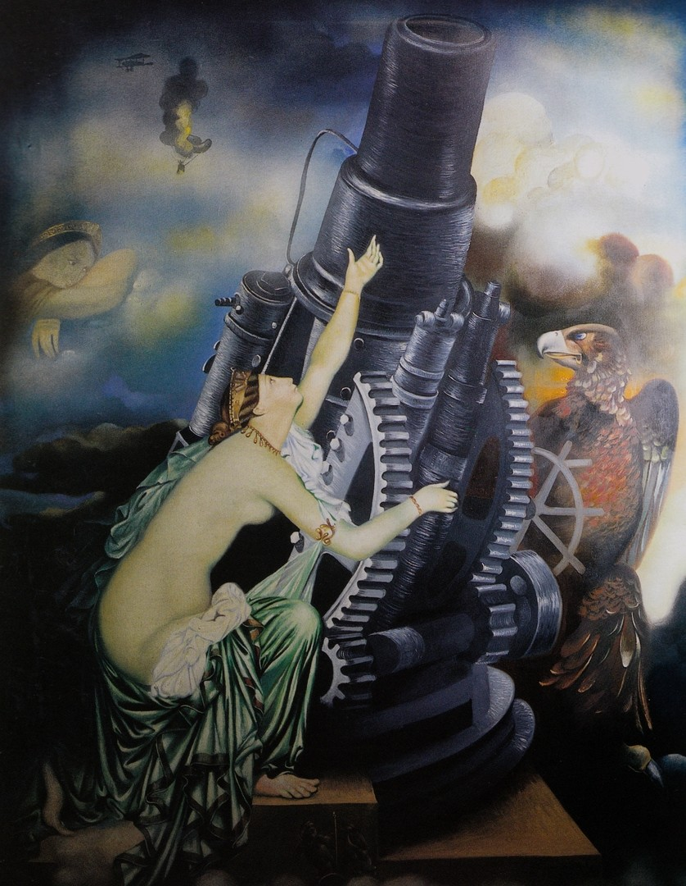
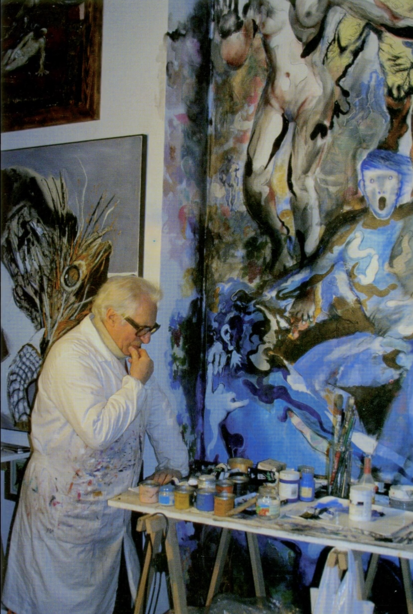
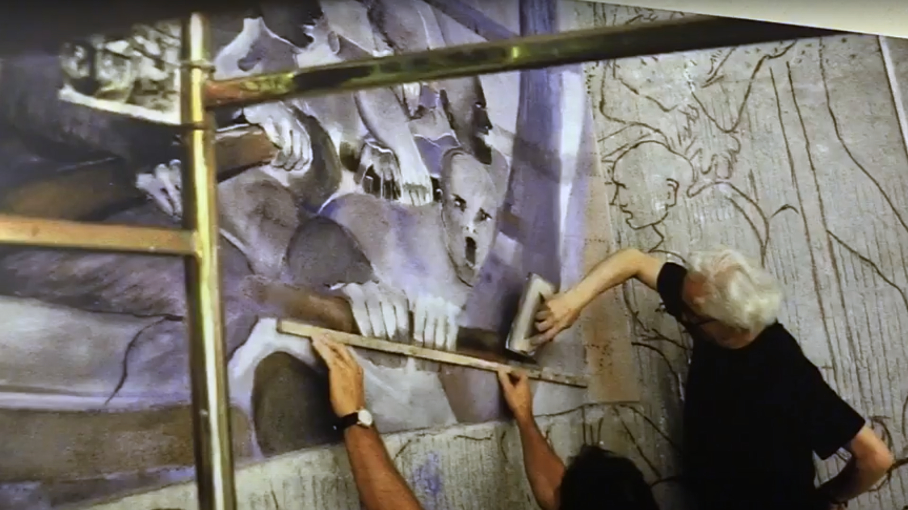
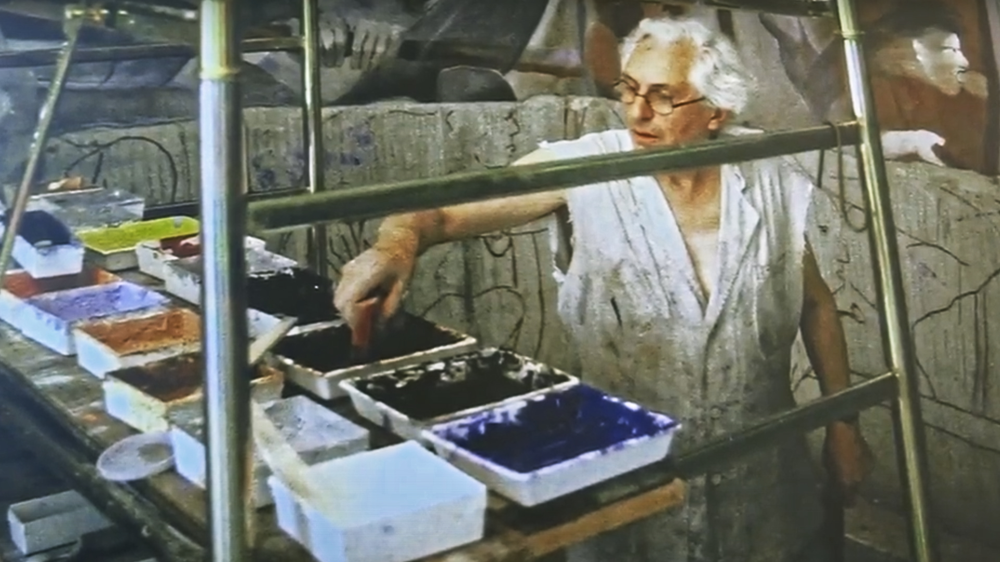
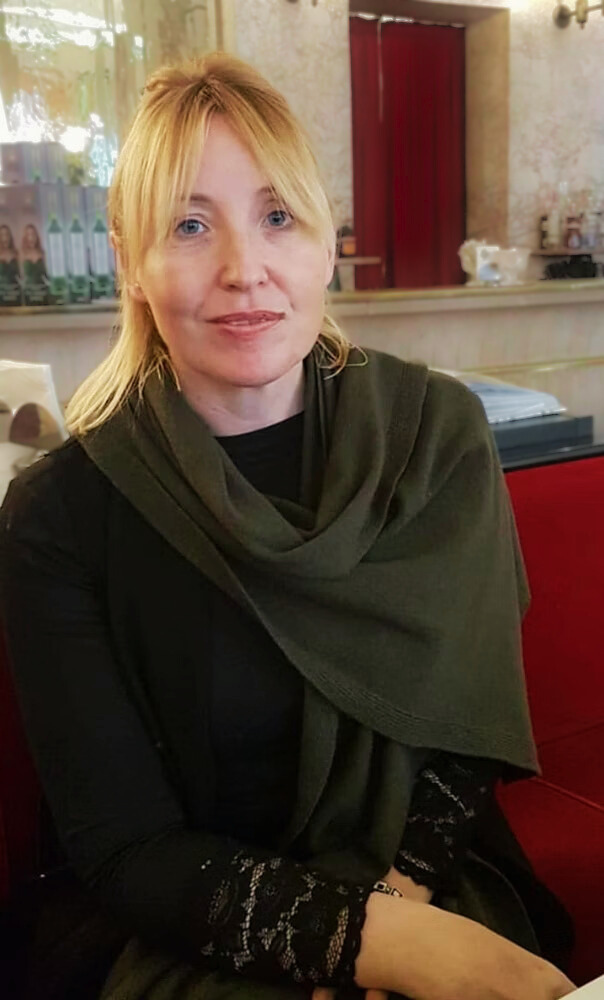

A Visual Storm
Documentary film about the life and work
avantgarde artist Aurelio Caminati.

Documentary film about the life and work
avantgarde artist Aurelio Caminati.
A portrait of avant-garde Italian master artist Aurelio Caminati (1922-2012), whose prophetic vision & storm force nature spanned six turbulent post war decades.
The film features Aurelio's journey to Ireland where he forged a deep connection with local people and landscape. Set against baroque intensity of Ireland's wild Atlantic coastline, the film interweaves raw, untamed power of nature with this resistance master's compulsion to create.
The film captures Aurelio's provocative vision, capturing storms, solitude and creative spark that emerges from nature's fury & artist's realization of nature as ultimate power source.









Sinéad Walsh tells visually rich stories. A graduate of Trinity College, MA Art History & English and INA Paris. Sinéad's work includes working with children and persons with disabilities. A Visual Storm emerged from need to bring attention to the artwork of Aurelio Caminati.

Sinéad Walsh
Brian Keegan
Jack Thornton, Marco Cronin Conte, Ryan Darnell, Eddie Naudé, Bob Caldwell, Dylan Grant, Jasper Fitzgerald, Kevin Cooney, Shauna Costella, Jackie Jarvis, Maxim Anewhnkob
Leandro Arouca
Kevin J Smyth
Special thanks to Caminati Estate and the University of Genoa for granting permission to use original photographed artwork by artist Aurelio Caminati from their archives for the creation and promotion of the film.